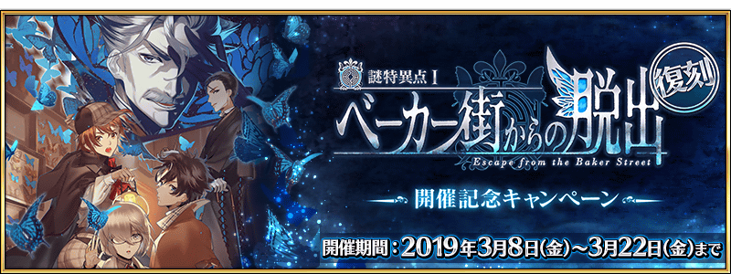
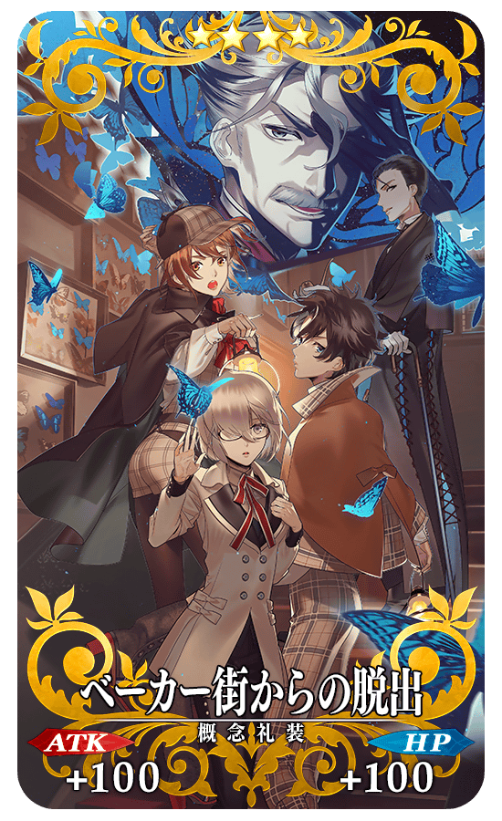

為了記念Fate/Grand Order×現實逃脫遊戲「謎特異點Ⅰ 逃離貝克街」復刻版的舉辦，實施Fate/Grand Order×現實逃脫遊戲「謎特異點Ⅰ 逃離貝克街」復刻版 舉辦記念宣傳活動實施！
迦通過勒底之門在下述的期間中以期間限定復刻的「謎特異點Ⅰ 逃離貝克街 舉辦記念關卡」，得到關卡限定的概念禮裝吧！
※請注意在「謎特異點Ⅰ 逃離貝克街 舉辦記念關卡」沒有文字冒險部份。
※在上次舉辦時通過關卡的話，關卡不會出現。
※上次同時舉辦的期間限定活動「虛月館殺人事件」不會舉辦。
◆舉辦期間◆
2019年3月8日(五) 17:00～3月22日(五) 11:59
◆關卡開放條件◆
通過「特異點F 炎上汙染都市 冬木」的Master對象
◆「謎特異點Ⅰ 逃離貝克街 舉辦記念關卡」限定概念禮裝◆
|  |
★★★★SR |
Fate/Grand Order×現實逃脫遊戲「謎特異點Ⅰ 逃離貝克街」復刻版為目標在60分限制時間內逃脫，以6人1組的團隊行動，挑戰迷題的體驗型遊戲。
故事為原創劇情，參加者的各位自己做為Master，與瑪琇和Servant一起解開在19世紀末的貝克街發生的事件之謎。
復刻版的會場為東京與大阪的2會場。預定2019年4月舉辦。
關於Fate/Grand Order×現實逃脫遊戲「謎特異點Ⅰ 逃離貝克街」復刻版的詳情，請自下述URL確認。
http://realdgame.jp/fgo2018/